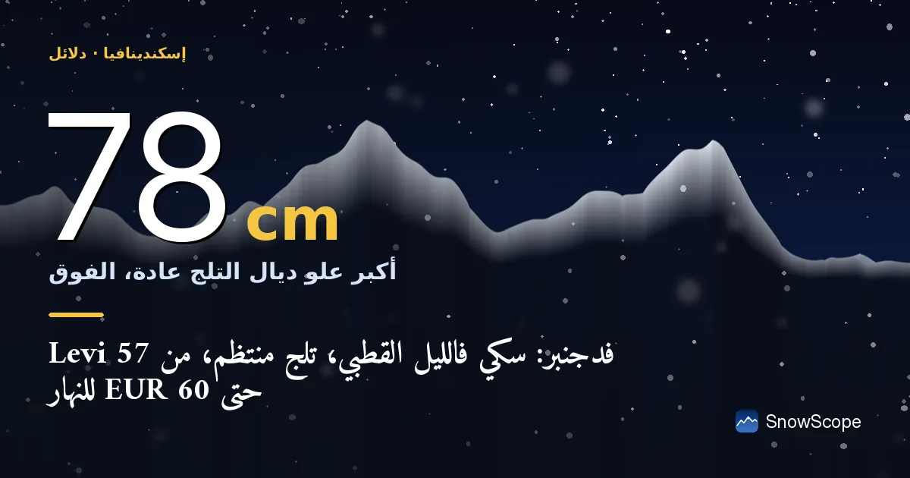

Levi فدجنبر: سكي فالليل القطبي، تلج منتظم، من 57 حتى 60 EUR للنهار
التلج ديال Levi فهمبر تحسّن بالفعل فهاد العقود الأخيرة، خاض نقض الاتجاه اللي فألبس الجبال الأوروبية. آخر 15 شتوات بيهم كل أسبوع ديال الكريسماس كان فيه 30 سم ولا أكثر فالأرض، قاس 87% فأول 15 شتوات ديال التسجيلات ديالنا. خطط لرحلة بين نص فهمبر والسنة الجديدة وعندك احتمالات كبيرة ديال التلج المستقر والبارد والممشوط.
شوف توقعات التلج مباشرة ديال Levi فالتطبيق ديال SnowScopeالعلو ديال التلج، التنبيهات والخريطة 3D، فابور.
علاش Levi كايخدم فهمبر
Levi هي جبل منخفض: تل صغير وملقى من تلال لابلاند، يرتفع بغيتو 333 م من الأسفل للقمة. كيفاش هي ناعمة وما عاليش براق، معطيات التلج ديالنا ديال 46 شتوات تاخدها كقطاع واحد. الحقيقة الكبرى هي الاستقرار: ما كانش في أي شتوة فيهم الأرض عارية فـ15 فهمبر، والعلو ديال التلج كاين فالجبل ما يتبدل براق مع الارتفاع.
الاستقرار هذا يجي من الجغرافيا ديال لابلاند. فشمال بعيد، الشتوة الدافية ما معناتش أرض عارية، معناتها تلج مبلول. Levi دايرة في 67.8°N، حيث حتى فهمبر ديال الرحمة كايبقى بارد بغيتو يبني قاعدة ويحافظ فيها.


تلاتة أسابيع، تلاتة احتمالات
فهمبر الأول (1-7 فهمبر) هو مقامرة: بغاي 57% ديال الشتوات كانت فيهم 30 سم ولا أكثر لحتى تاريخ كاين. اليوم الأول الحالي باش لقى 30 سم هو 27 نوفمبر، بس هاد يتبدل. إذا مشيتي فالأسبوع الأول، تفقد الحالة بشد وجهز نفسك بالصبر.
نص فهمبر (15-21 فهمبر) أحسن. النسبة ديال الشتوات اللي فيها 30 سم أو أكثر طالعة لـ83%. في 15 فهمبر حالي، SnowScope بيها 38 سم. فشتوة دقيقة (1 من 10)، توقع 26 سم؛ فشتوة عميقة، 52 سم. النطاق الضيق هذا هو الحالي للجبال المنخفضة: نادر توصل للتلج الطري، ونادر تبقى عارية.
أسبوع الكريسماس: معقل الموسم
أسبوع الكريسماس (22-28 فهمبر) هو أحسن أسبوع فـ Levi فهمبر. فآخر 15 شتوات، كل واحد منهم كان فيه 30 سم ولا أكثر. فالمجموع، 91% ديال 46 شتوات وصلو لهاد الرقم. في 24 فهمبر حالي، 43 سم فالأرض.
ما جيش لـ Levi بغاية التلج الطري. غاي 2% ديال أسابيع الكريسماس فيهم 60 سم ولا أكثر. الشي اللي تاخد بدلا هو التلج البارد والمستقر والممشوط اللي كايبقى. الشتوة اللي فاتت جابت 55 سم في 24 فهمبر.
الليل القطبي والضو
فهمبر في Levi هو كذاك بداية الليل القطبي. بحلول نص فهمبر الشمس كاينة تقريبا ما طالعة، وفجزء ديال الشهر ما طالعتش من الأفق خالص. الضو يتبدل لأزرق وورادي جزء من الساعات بعد الظهر، والكثير ديال التزحلق كايحصل فالشفق ولا الظلام.
جهز معاك لامبة ديال جودة بغاية المشي بين الجولات، قفازات دافية، وحماية الوجه. البرد جاف وخانق. للكثير ديال المتزحلقين، الضو الغريب هذا والسكوت ديال الجبال المنخفضة بيخليو Levi ما تنسى فهمبر.
كيفاش تبدل الموسم
Levi شي غريب فالسلسلة هاد: التلج ديالها فهمبر قوى، ما نقصش. في أول 15 شتوات (1980-81 لـ 1994-95)، معدل فهمبر كان 41 سم. في آخر 15 شتوات (2011-12 لـ 2025-26)، طالع لـ 45 سم. التحسن هذا واضح أكثر عند الكريسماس: 87% ديال الأسابيع فيهم 30 سم ولا أكثر في الفترة الأولى؛ دابا هي 100%.
التوجه هذا بيعكس كيفاش الجبال البعيدة فالشمال جاو ليهم تبديل المناخ بغاية مختلفة عن ألبس. التدفأة ما معناتش عارية؛ يمكن معناتها تلج مبلول كايبقى يتراكم بغيتو.
الثمن والوقت
تذكرة اليوم بتكلف 60 يورو عند بوابة المحطة ولا 57 يورو إذا حجزتي أونلاين 14 نهار قبل الأقل. هاد الثمن كايدير من 1 فهمبر لـ 2 ماي وهو من أقل الثمن الثابت في السلسلة هاد. المحطة Ylläs القريبة كاتفرض 60 يورو بالحالي و 55.50 في موسم الركود (قبل 11 فهمبر)، وكاتباع تذكرة 7 نهار بـ 254.50 يورو في هاد النافدة نفسها.
لرحلة قصيرة في نص فهمبر ولا أسبوع الكريسماس، الثمن اليومي ديال Levi نافس. لأسبوع كامل في فهمبر الأول، تذكرة 7 نهار موسم الركود ديال Ylläs يمكن تكون أرخص. بأي حالة، حجز الصعودات والسكن قدام كاين: فهمبر كايتملي بسرعة في لابلاند.
نصايح للي كيتزلجو
- اترك الأسبوع الأول ديال فهمبر إلا إذا كنتي تحب الخطر: غاي 57% ديال الشتوات فيهم 30 سم لحتى تاريخ كاين. نص فهمبر وأسبوع الكريسماس أحسن زاف.
- حجز السكن والصعودات قدام. احجز أونلاين بـ 57 يورو بدل 60 يورو اليوم إذا خططتي قدام.
- جهز معاك حاجيات البرد: لامبة بغاية الشفق القطبي، قفازات دقاق، بالاكلافا، وسانسكرين بـ SPF عالي بغاية بريق الثلج.
- إذا مشيتي خارج الجول الممشوطة على الجبل، شد النشرة ديال الانهيارات والطقس قبل لما تترك الجول المحددة.
- الشتوة اللي فاتت (2025-26) كانت فيها 55 سم في 24 فهمبر. حتى في شتوة دقيقة (1 من 10)، توقع 26 سم في 15 فهمبر، كايكفي للجول الممشوطة.
على هاد الأرقام
العلو ديال التلج فالمحطات هو أكثر تلج فالجهة الفوقانية فالتاريخ المكتوب؛ هادو تقديرات لمنطقة، ماشي قياس فنقطة وحدة. التوقعات يمكن تتبدل. ديما شوف النشرة الرسمية ديال الانهيارات قبل ما تخرج من البيست.
النشرات الرسمية ديال الانهيارات: EAWS – European Avalanche Warning Services
كيفاش تستاشهد بهاد المقال
للبحث، التعليم ولا الصحافة: الأرقام والرسومات تقدر تعاود تخدم بيهم بحرية تحت CC BY 4.0 مع هاد الاستشهاد.
SnowScope (2026), Levi فدجنبر: سكي فالليل القطبي، تلج منتظم، من 57 حتى 60 EUR للنهار, https://snowscope.app/blog/ar/2026/11/levi-december-skiing-polar-night-snow-price.html, تشاف ف 2026-11-14
SnowScope (Atlas Labs). (2026, November 14). Levi فدجنبر: سكي فالليل القطبي، تلج منتظم، من 57 حتى 60 EUR للنهار. SnowScope snow reports. https://snowscope.app/blog/ar/2026/11/levi-december-skiing-polar-night-snow-price.html
BibTeX
@misc{snowscope2026levidecemberskiingpolarn,
author = {{SnowScope (Atlas Labs)}},
title = {Levi فدجنبر: سكي فالليل القطبي، تلج منتظم، من 57 حتى 60 EUR للنهار},
year = {2026},
month = nov,
howpublished = {\url{https://snowscope.app/blog/ar/2026/11/levi-december-skiing-polar-night-snow-price.html}},
note = {Published 2026-11-14 13:29 UTC; accessed 2026-11-14}
}· CC BY 4.0 · الطريقة، الداتا والأدوات →
Levi: التلج والحرارة حسب العلو، هاد الشتا مقارنة مع اللي فاتت (الأدوات) →
تابع Levi
فابور: ميساج ملي يجي التلج، والتوقعات كل صباح.